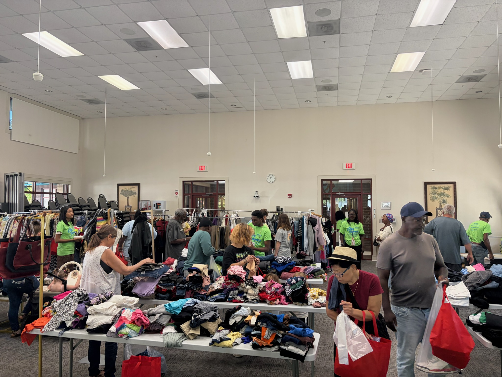
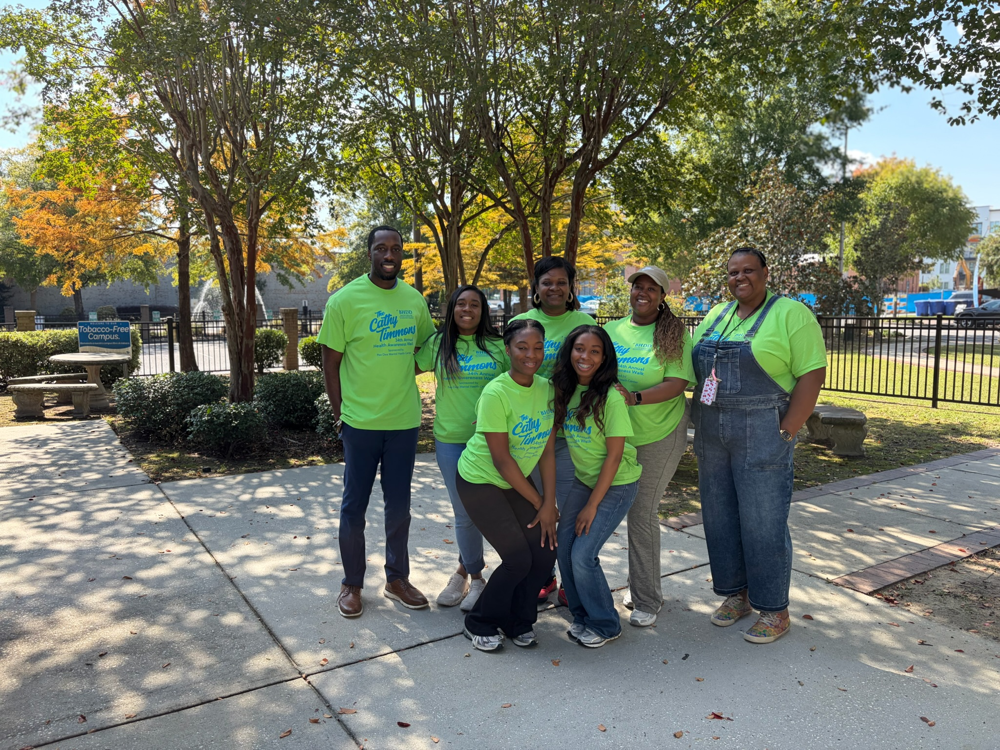
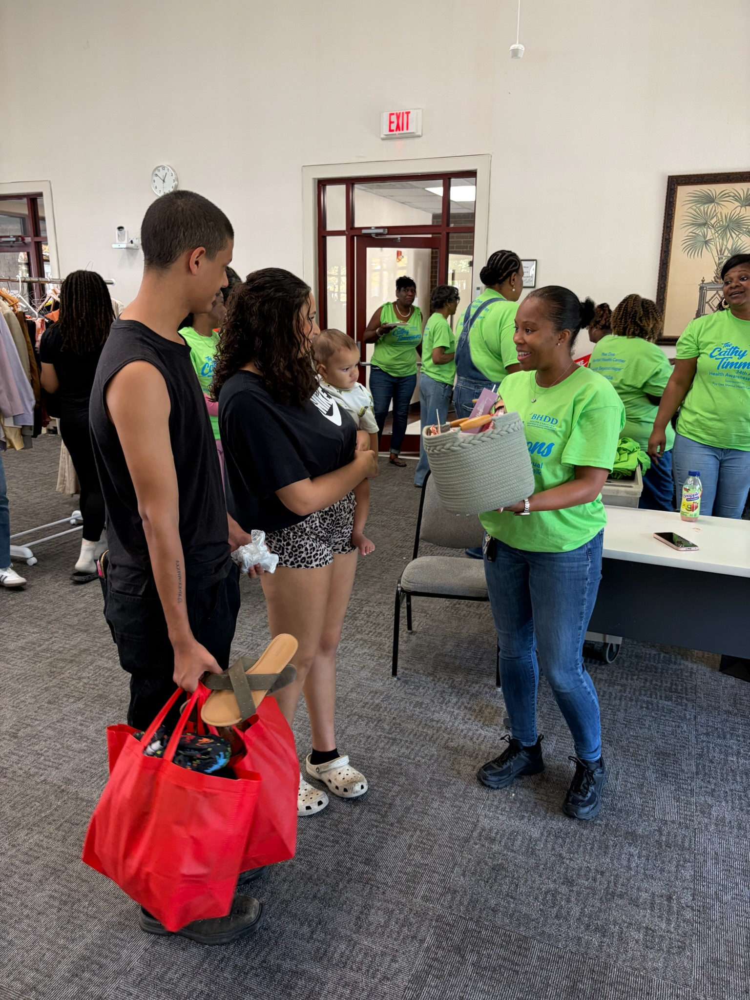
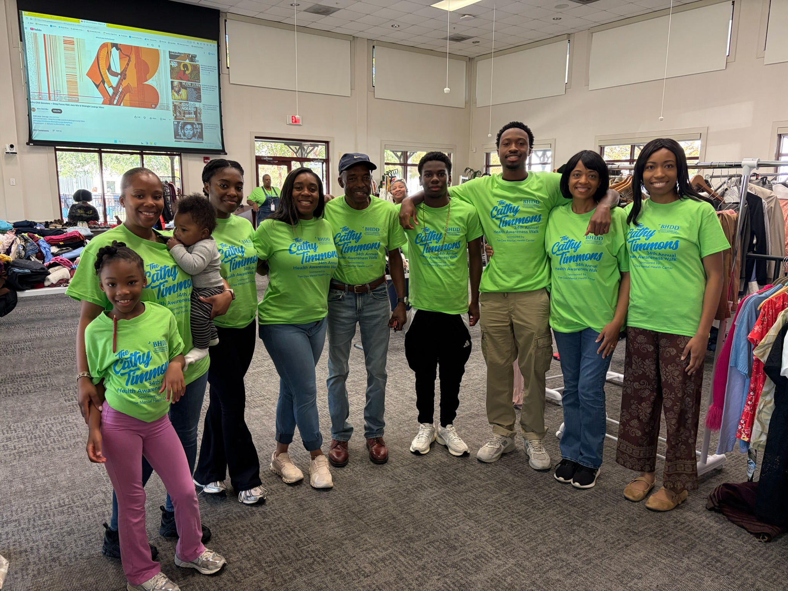
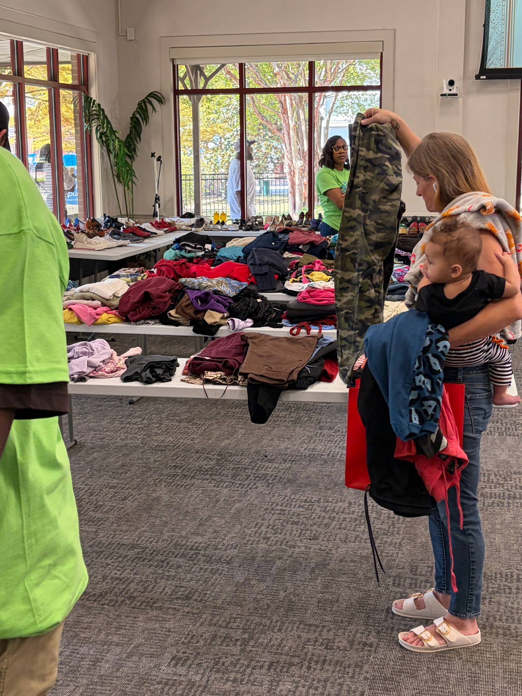
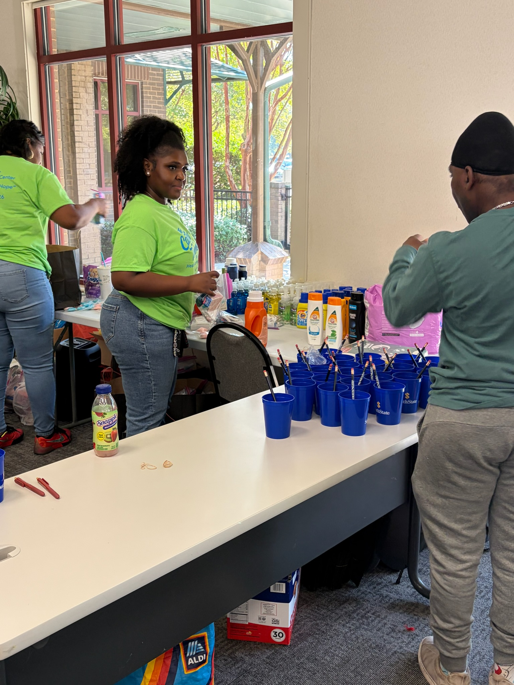
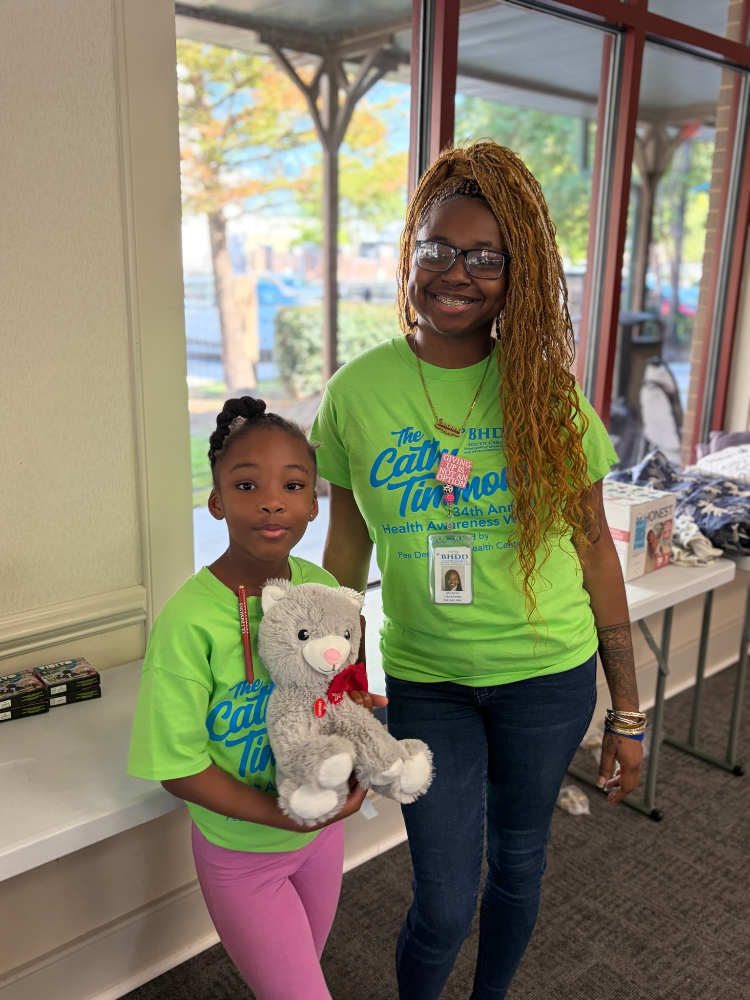
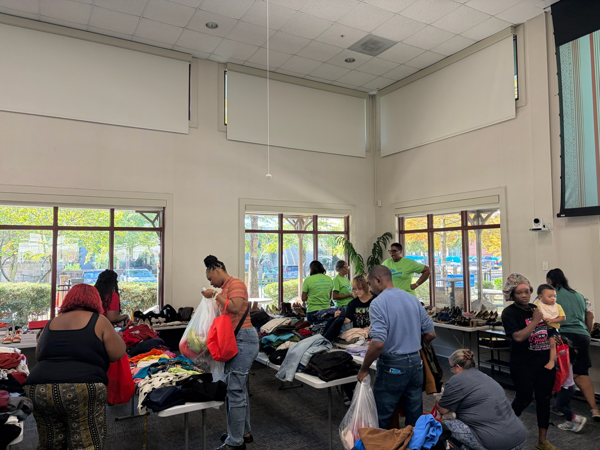
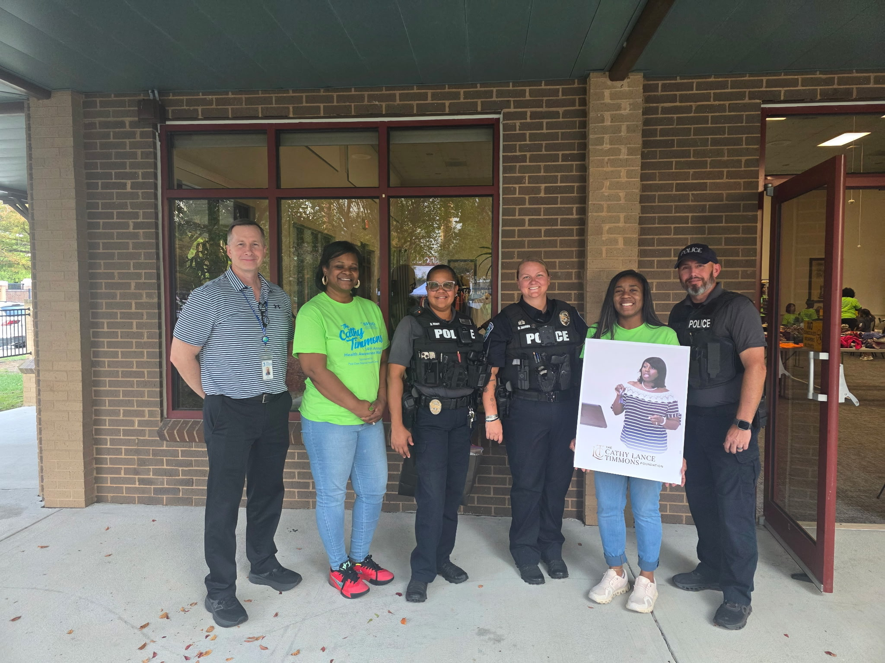

Event Recap · October 16, 2026
Cathy’s Closet served 229 households in Florence.
On October 16, 2026, Cathy's Closet Pop-Up Community Store opened its doors at the Bevis Training Center and served 229 households. Guests shopped gently used clothing and all-season outerwear at no cost, and every household left with a goody box of hygiene essentials, detergent, new socks and undergarments, calming items, and mental health resources. That is what Cathy's Closet is about: meeting everyday needs with dignity and connecting our neighbors to support, because everyone needs help sometimes. Thanks to the generosity of our community, we have clothing left over, and we are already planning how to put even more of it into the hands of families at our next pop-up on March 11, 2027.
Read the WPDE StoryEvent Statistics
One day of neighbors showing up for neighbors.


Dignity in Action
Free help, without making people prove they need it.
Cathy’s Closet is a free pop-up store. There is no application, no income check, and nothing to sign up for.
Guests shop for clothing and outerwear while volunteers connect households with practical essentials and mental health resources. Every interaction is grounded in welcome, choice, and respect.
Next pop-up: March 11, 2027. Event details will be shared as planning is finalized.
Cathy’s Closet Gallery
Community care, captured in the moment.






What We Collect
Everyday items can become meaningful support.
Donation needs shift by season and community request. New socks and underwear are welcome if they are still in unopened packages. Used socks and underwear cannot be accepted.
Clothing
New or gently used seasonal clothing, coats, uniforms, jackets, and shoes.
Food
Canned food and shelf-stable items that help households stretch the week.
Home & Hygiene
Cleaning supplies, personal care items, menstrual products, and household basics.
Family Essentials
Seasonal support items, small household goods, and other approved resources for families.
How to Help
Support Cathy's Closet as a donor, volunteer, or partner.
Donate Items
Give approved items during active collection windows.
Ask About NeedsVolunteer
Help sort, organize, prepare, welcome guests, and distribute donated goods.
Get InvolvedHost a Site
Become a Community Donation Partner and serve as an official drop-off location.
Learn More